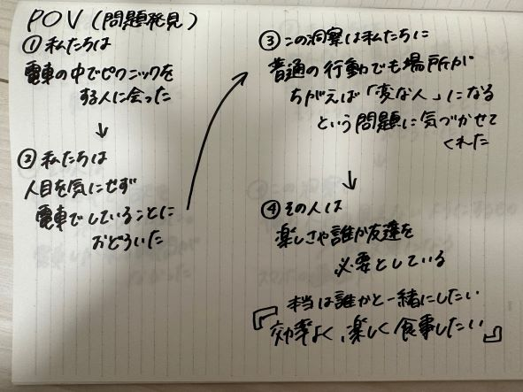

Design for Others
持ち運びできる机
今回注目した問題

このPOVなどから班で話し合い、この人が電車の中で楽しくピクニックできるように持ち運びできる机を作ることにした。
そのほか、食事専用車両を作ることやピクニックイベントの開催などの案が出たが、自分たちで作れそうな机を作るという結論になった。
作品のスケッチ
実際に作った写真
折りたたみできるように４つに分けて、レーザーカットしたあとに、クリアファイルで作った蝶番で組み立てた。
電車の中でピクニック気分が味わえるように机の部分に風景の写真を貼り付けた。
Illustratorで作る際に写真をモノクロにし、コントラストを調整したが、あまりうまく彫刻できなかった。
また、机に安定感がなかったので組み立てをしっかりしたり厚さを出したら良いのかなと思った。
飲み物が置けるようにペットボトルの底の大きさに凹みを作りたかった。
折りたたむと持ち運びしやすい形に
設計ファイル
dxfファイル
班の人の作品
てら
びゃんびゃん
AYU